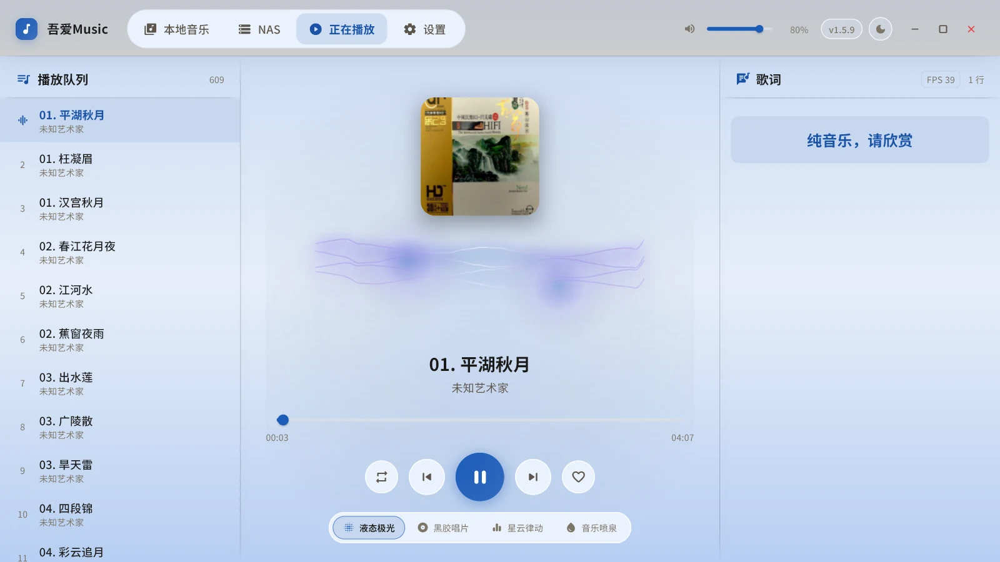
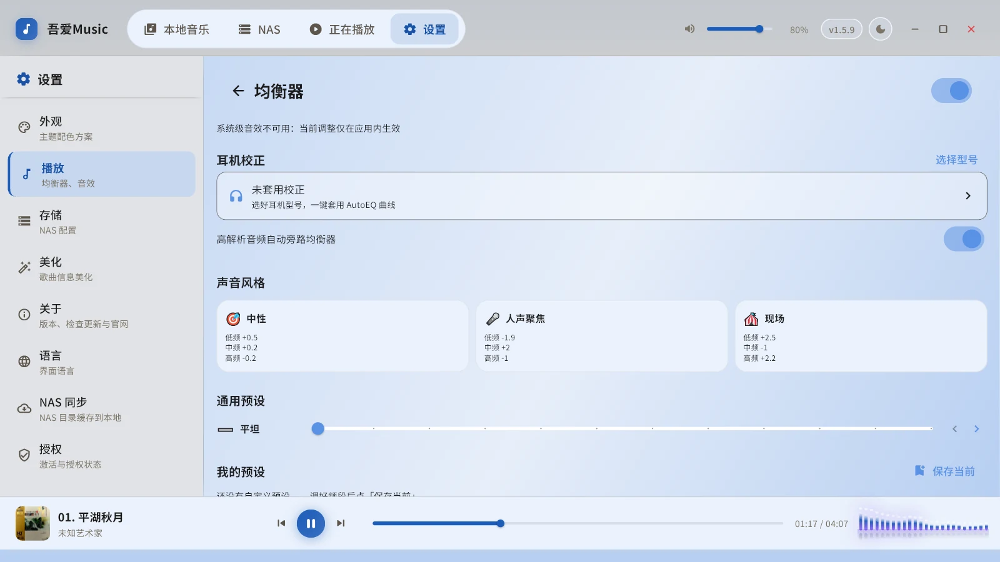
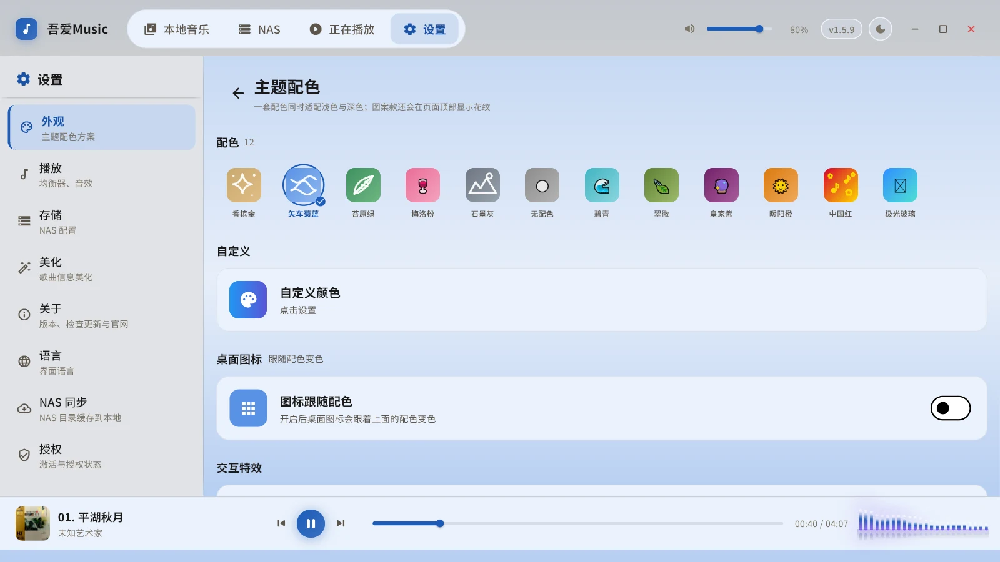

吾爱Music PC 版
吾爱Music PC 版大屏该有的效率
宽屏空间不浪费。导航、曲库、队列同时展开，找歌、整理、播放一屏完成。
01
宽屏三栏布局
文件管理器、曲库与播放队列并排常驻，不用来回切换页面，找歌与整理一气呵成。
02
本地曲库统一管理
本地磁盘、外置盘与网络目录统一入库，专辑墙与列表视图随时切换，海量曲库也能快速定位。
03
桌面级操控
键盘、鼠标与滚轮操作顺手；歌词、均衡器、可视化与智能歌单，与手机端共享同一套设计语言。
真实界面截图
来自 Windows 桌面版的运行画面。



